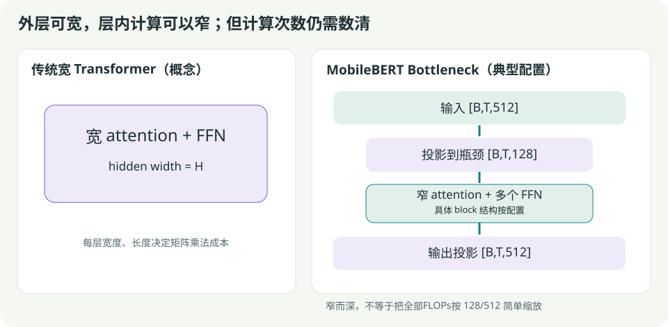
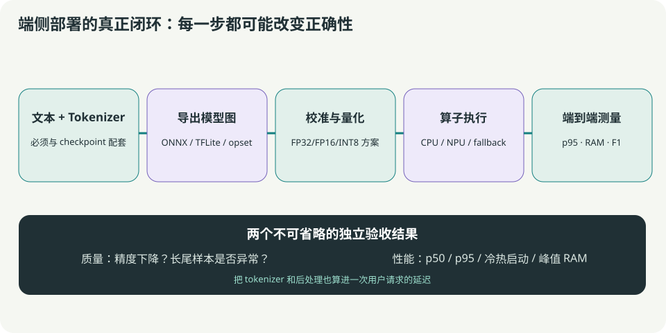

1. 端侧 BERT 的约束不是只有模型参数
把文本 Encoder 放进手机或离线设备，需要面对磁盘模型包、加载时峰值 RAM、单次延迟、持续功耗、CPU 指令集、NPU/NNAPI 是否支持全部算子，以及运行时预处理开销。一个模型参数更少，可能仍需要更深的串行计算；另一个模型 FLOPs 更少，也可能因内存搬运或小矩阵 kernel 调度而在手机上不快。
MobileBERT 不是单纯把 BERT-base 的 12 层砍成 6 层。它探索窄但深的学生网络：在多个 Transformer 层保持较窄内部瓶颈，使用特殊的 teacher/student 结构和蒸馏，让学生在受限资源中保留较多表示能力。其目标是 task-agnostic 预训练模型，可再按情感分类、问答等任务微调。

2. 为什么外部 512 与内部 128 可以同时存在
从一个教学张量 X∈ℝ[B,T,512] 出发，线性 bottleneck 投影把 token hidden 映射到 [B,T,128] 的窄空间。在窄空间中完成一定的 attention/FFN 运算后，再投影回 512 维输出，方便层间表示和残差连接。由于 attention 里的投影和 FFN 往往涉及维度的乘积，减少内部宽度可以降低部分主要计算，但两个额外瓶颈投影也有自己的成本。
官方 Transformers 的典型 MobileBERT config 包含 hidden_size=512、intra_bottleneck_size=128、num_hidden_layers=24、num_attention_heads=4、num_feedforward_networks=4，但这些是特定配置默认值，不得误称所有 MobileBERT 变体都一样。一个 block 可能包含多个串行 FFN，以在保持较窄维度时增加非线性变换能力。
这也解释为什么“MobileBERT 有 24 层，所以一定比 12 层 BERT 慢”是不充分的：每层宽度、注意力 heads、FFN 中间宽度、算子实现和设备不同，串行深度与单层成本需要共同测量。
3. Inverted-bottleneck 教师为什么不是普通 BERT-large
原始 MobileBERT 论文先训练一个为知识迁移特别设计的教师，常称 IB-BERT-large，使用 inverted-bottleneck 结构帮助建立与学生兼容的中间表示。这个教师不等于开箱即用的普通 bert-large-uncased checkpoint。学生的 bottleneck Transformer 和教师的对应 feature maps 被设计成便于 layer-wise transfer。
蒸馏可以在不同深度向学生提供 feature-map 或 attention 信息；层间 hidden 形状不一定天然一致，需要具体对齐或投影。若某个开源 checkpoint 不是使用 IB-BERT teacher 训练，不能因为它叫 MobileBERT 就将原论文全部 teacher 实验视作该 checkpoint 的事实。
原论文报告了在指定 CPU/移动设备上的模型体积和延迟优势；迁移到 2026 年设备、系统 BLAS 或量化运行时，必须重新测量，而不是照抄原论文的毫秒数。
4. 计算预算：瓶颈内 attention 与 FFN 怎么数
Dense attention 在隐藏宽度 d、长度 T 下，Q/K/V/O 线性投影大致与 T·d² 成正比，attention score/weighted values 与 T²·d 成正比；FFN 的两个主矩阵乘法大致与 T·d·d_ff 成正比，常见扩展宽度 d_ff 约为多个 d。瓶颈结构是在这些宽度相乘的位置降低成本，但还要加上 512↔128 投影与额外 FFN 个数。
这个 131,072 只是两个假设的纯矩阵权重，不包括 bias、归一化、注意力、FFN，也没有说明现实 checkpoint 一定以两个相同投影实现。不能把它拿去当完整 MobileBERT block 参数数。
若把任意 dense Linear 的输入从 [B,T,H] 映到 [B,T,d]，形状核查能发现维度错误，但无法证明最终 GPU kernel 已加速：实际测量仍不可缺。
5. 从 PyTorch checkpoint 到端上模型，不是一次 export 就结束
可靠的部署链路至少应审计：tokenizer 与 checkpoint 配套 → 固定输入最大长度及 padding 语义 → 导出 ONNX / TFLite 等运行图（如果框架与算子兼容）→ 图优化/算子融合 → 可选 FP16 或 INT8 量化 → 同设备正确性与性能测试。模型支持 ONNX 并不代表所有 Android NPU 都支持它的 LayerNorm、GELU、动态 reshape 与 attention pattern。
不同推理引擎的动态轴、batch、padding 会改变输出和 latency；CPU 与 NPU 之间若频繁回退，数据传输成本可能吞掉加速收益。生产时要记录 opset、推理引擎版本、设备芯片、线程数量及稳定的 thermal 状态。句子预处理所需的中文分词或 WordPiece 也应计入端到端请求时间，不能只测 Transformer forward。

6. INT8 量化：压的是权重和激活范围，不是预训练质量
对一组浮点权重 x，典型对称 int8 量化可用缩放系数 s>0：q=clip(round(x/s),−127,127)，近似重建为 x̂=sq。实际实现可能是 per-tensor 或 per-channel，激活常有非对称 zero-point；权重量化与动态/静态激活量化是不同设置。
INT8 理论上每个权重元素占 1 字节而 FP32 占 4 字节，但完整包还包括 scale/zero-point、未量化算子、embedding、metadata 等；不能直接断言整个端侧安装包缩小四倍。还需要有代表性的校准数据覆盖不同长度、语言、极值激活。量化前后的输出可以先做 embedding cosine / logit 差异检查，再在真实 dev 数据集评估 accuracy/F1。
7. 基准协议：谁是比较对象，怎样固定测量条件
记录质量时应包括每个 task 的 checkpoint、tokenizer、数据集切分和指标（例如 SQuAD v1.1/v2.0 EM/F1 要明确区分）。性能报告至少拆分 tokenization、inference、postprocess，给出 p50、p95、冷启动与热启动、CPU/RAM 峰值、吞吐及设备温度限制。批量推理与交互式单条请求的最优模型可能不同。
比较剪层 DistilBERT、窄深 MobileBERT 与后续 INT8 版本时，所有模型需要相同长度分布和精度需求。更小模型在部分数据集上更强并不违反常识：教师蒸馏和不同预训练配方可以改变任务质量；但论文某个 benchmark 的分数不代表所有领域都适用。
8. 交互一：相同层数不等于相同成本
看外部宽度与内部瓶颈
教学假设每个 block 使用宽度为 d 的主矩阵乘法，不是完整 MobileBERT FLOPs。
一个 512×512 的线性矩阵有 262,144 个纯权重。 该运算若放在长度 T 的每个 token 上，主乘法数量级随 T×512² 变化。 这不包含 attention T² 部分。
9. 交互二：INT8 量化到底检查什么
量化/部署验收的三种视角
示例权重 x=0.37，scale s=0.01；不包括真实模型的 per-channel 标定。
教学权重 x=0.37，scale=0.01 → q=round(37)=37。 反量化 x̂=0.37，例子无误差；但其他 x 可能产生舍入/截断。 单个数无误差不代表整个模型量化无损。
10. 端侧最容易出现的反直觉结果
- INT8 模型更小，但某设备没有合适 int8 matmul kernel，端到端反而更慢。
- 模型 forward 在 GPU 上很快，但每个请求需要复杂 tokenizer 或输入格式转换，系统延迟被前后处理主导。
- 模型 24 层窄层的串行开销在单 batch 下较大，和 GPU 大 batch 吞吐不呈同样比例。
- 量化后总体 accuracy 接近，但对长尾语言/长文本的误差显著扩大，需要切片测评。
关键结论
- MobileBERT 是窄而深且配套特殊教师蒸馏的模型，而不是简单砍掉 BERT 层数。
- hidden=512、intra-bottleneck=128、24 层和多个 FFN 是特定配置，需按 checkpoint 核对。
- 模型参数、FLOPs、实际端侧延迟是不同目标；INT8 也需要软硬件支持和质量校验。
- 部署实验必须把 tokenizer、postprocess、NPU fallback 和 p95 纳入协议。
原始论文与技术实现
- Sun et al., MobileBERT，§2–4; Figure 1, deployment results。
- MobileBERT arXiv，IB-BERT teacher and bottleneck distillation。
- Transformers MobileBERT，MobileBertConfig dimensions and bottleneck switches。
- ONNX Runtime quantization documentation，dynamic/static calibration and operator support。